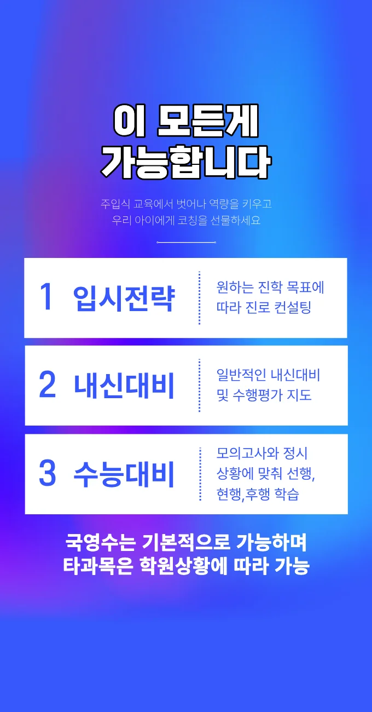
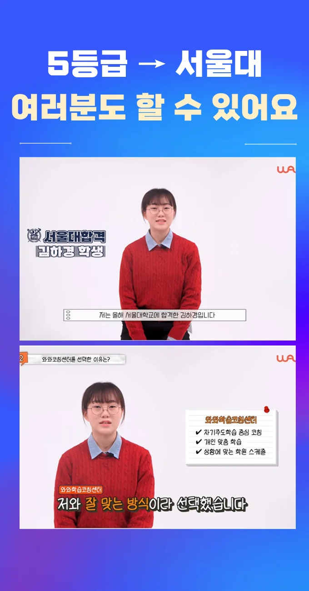

삼송2동 중3 수학학원을 고를 때는 먼저 아이의 현재 학습 수준과 목표를 명확히 파악하는 것이 가장 기본이에요. 그런 다음 강사의 교육 철학과 수업 진행 방식을 직접 체험해 보는 것이 큰 도움이 돼요. 특히 체험 수업에서는 교재 활용 방식과 피드백 제공 방법을 눈으로 확인할 수 있어요. 주변에 위치한 교육 시설이 얼마나 밀집해 있는지도 중요한 판단 요소가 되며, 교통 편리성을 고려하면 일상적인 학습 관리가 쉬워져요. 삼송2동 중3 수학학원 방문 시에는 강의실 조명, 책상 배치, 전자기기 사용 환경 등을 꼼꼼히 살펴보면 학습 집중도가 높아질 가능성을 짐작할 수 있어요. 마지막으로 수강료와 제공되는 교육 내용의 비율을 비교하여 가성비를 판단하면 현명한 선택을 할 수 있게 돼요. 또한 삼송2동 중3 수학학원에서 제공하는 학습 자료와 온라인 강의 연계 여부를 확인하면 장기적인 학습 지속성에도 긍정적인 영향을 줄 수 있어요.
이 지역은 주거 밀도가 높고 삼송2동 중3 수학학원가가 밀집해 있어 아이들이 학구열에 자극을 받기 쉬운 환경이에요. 공부를 마치 거대한 정글을 탐험하는 일과 비슷하다고 생각하면 이해하기 쉬워요. 각 학년마다 넘어야 할 장애물이 다르기 때문에 그에 맞는 도구가 필요하거든요. 특히 삼송2동 학생들은 친구들과의 경쟁이 심하다 보니 잠시만 집중력이 흐트러져도 따라가기 벅찰 수 있어요. 그래서 삼송2동 중3 수학학원 선택 시에는 아이의 현재 위치에서 어디로 가야 할지 명확하게 안내해 주는지를 따져봐야 해요. 단순 암기보다는 흥미를 유발하여 지속적인 집중력을 유지할 수 있는 전략이 필수적인 지역이랍니다.
와와학습코칭센터는 학생마다 가진 배경과 성향이 다르다는 점을 깊이 이해하고 있어요. 아이들이 수업 시간에 오답을 주제별로 나누어 누적된 실수를 추적하면, 같은 유형의 문제에서 다시 틀리는 일을 막을 수 있답니다. 단어 구조 훈련을 통해 기초를 다져주니 어휘력이 부족해 고민이던 분들께 특히 추천하고 싶어요. 부모님이 가장 궁금해하시는 수강료는 미술일반 십사만 원 수준으로 합리적인 편이에요. 단순히 지식을 주입하는 게 아니라 아이가 스스로 문제를 해결할 수 있는 힘을 길러주는 점이 이곳의 가장 큰 매력이랍니다.
| 학원명 | 와와학습코칭학원 |
| 수강료 | 미술일반 140,000원 |
CURRICULUM
우리 학습 프로그램은 수행평가 대비를 위해 맞춤형 워크시트를 제공하고, 사전 문제 파악으로 학습 흐름을 미리 잡아줘요. 이런 방식은 지문을 읽기 전 문제를 먼저 확인하고, 관련 부분을 표시하면서 독해 전략을 자연스럽게 익히게 해요. 학생은 매주 주제별 핵심 개념을 복습하고, 실제 시험과 유사한 상황에서 실전 연습을 할 수 있어요. 학부모는 워크시트 사용법과 피드백 포인트를 안내받아 가정에서도 효과적인 학습 지원이 가능해요. 특히, 삼송2동 주변 학교에서 자주 출제되는 교과 내 사진도표그래프를 집중 풀이해 실전 감각을 키워요. 또한, 매 수업 시작 전 오늘 배울 이유를 짧게 떠올리게 함으로써 학습 동기를 강화하고 있어요. 마지막으로, 단계별 목표 설정과 성취도 체크를 통해 꾸준한 성장 경험을 제공하고 있어요. 결과적으로, 체계적인 워크시트 활용과 피드백이 결합되면 시험 점수가 눈에 띄게 상승하고, 학습 자신감도 크게 높아져요.
우리 동네 학생들은 삼송2동 중3 수학학원 선택 초기 단계에서 조용한 골목 안쪽 위치를 선호하지만, 실제 학습 효과와는 무관한 경우가 많아요. 등록 후에는 목표 설정이 흐려져 학습 방향을 잃는 경우가 흔해요. 학습 관리 단계에서는 시간 관리와 피드백 활용을 놓치는 경우가 자주 발생해요. 이런 실수를 예방하려면 체계적인 상담과 목표 관리가 필수예요
학부모는 강의 없이도 배움이 일어나는 구조를 만들기 위해 학습 기록 카드를 활용해 보세요. 학생은 성장 포인트를 정리하는 활동 루틴을 적용하면 공부 시간을 줄이면서 성과가 오히려 상승합니다. 교사는 학습 몰입 구간을 길게 유지하도록 전략적으로 지도하고, 서술형 답안에 개념 간 관계도를 그리게 하여 사고 흐름을 명확히 합니다. 전문가들은 이러한 방식이 자기 주도 학습을 촉진한다는 점을 강조합니다.
중학교 2학년으로 문제 풀이는 꾸준하지만 속도가 느린 학생에게 특히 효과적이에요. 집중력 유지 시간이 짧아도 짧은 시간에 효율적인 학습을 원하는 경우에 적합합니다. 학습 목표가 명확하고, 꾸준히 피드백을 받으며 성장하고 싶어 하는 학생에게 권장합니다.
삼송2동에 사는 한 학생은 처음엔 수업 분위기가 어색했지만, 교실 조명이 부드러워 집중이 잘 된다고 느꼈어요. 다른 학부모는 정기적인 소통을 통해 아이의 변화가 눈에 띄게 나타났다고 전해 주었어요. 또한 자습실 좌석이 깔끔하게 정리돼 있어 공부 환경이 쾌적하다고 만족감을 표현했어요. 시험 전날 따뜻한 격려와 응원이 아이에게 큰 힘이 되었고, 결과에도 긍정적인 영향을 미쳤다고 말했어요. 전체적으로 학습 효과와 분위기가 조화를 이루어 만족도가 높다고 여러 부모님이 공통적으로 언급했어요.

| 학원명 | 와와학습코칭학원 |
| 등록번호 | 제3918호 |